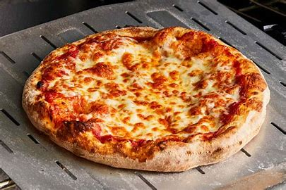
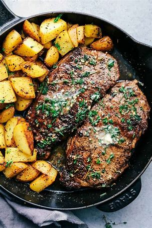

Favorite foods
chicken and Fries
pizza
.jpg)
Chicken and Fries
Fried chicken mixed with french fries
chicken
Fries
Salt
This recipe is easy to follow and will give you a 4 servings to feed you for days. This will give you protein and fill you up while not having to make it like an expert
- First, preheat the oven to 425 degrees
- then mix your dry ingredients.
- reserve to tablespoons of the mix for the fries.
- Sprinkle the seasoning on the chicken before putting it in until the thigh of the chicken is 165 degrees.
- Once done, remove the chicken and wait 20 minutes.
- For the fries, get vegetable oil and heat it up till it reaches 350 degrees.
- then slice potatoes into fries and cook it until its golden brown.
pizza

Cheese Pizza
Full cheese Pizza pie
This recipe for pizza will be enough to serve your whole family it is simple but does take some time
dough
Tomato sauce
Cheese
this recipe is perfect for you or your whole family to eat from. You can have your own party just with this pizza. And you dont have to worry about it being complicated
- First, add flour to the dough and roll it.
- Place dough in a lightly greased bowl for 1 to 2 hours.
- Then, preheat the oven to 450 degrees.
- Brush crust with a bit of olive oil
- After, Bake for 20 minutes.
- Finally, transfer the pizza to a cooling rack for 10 minutes.
- Then you can slice up the pizza and serve it to yourself or friends
steak

Steak and Potatoes
Garlic butter steak with potatoes
This steak recipe is very easy to learn and is healthy, quick to prepare and delicious.
Steak
Baby Yellow Potatoes
Olive oil
Butter
- First, combine steak with olive oil and soy sauce.
- then, mix olive oil and butter after add potato wedges in.
- cook steak strips 1 minute on each side. Stir in the reserved marinate to the steak.
- Remove heat from the steak and sprinkle a bit of parmesan on.